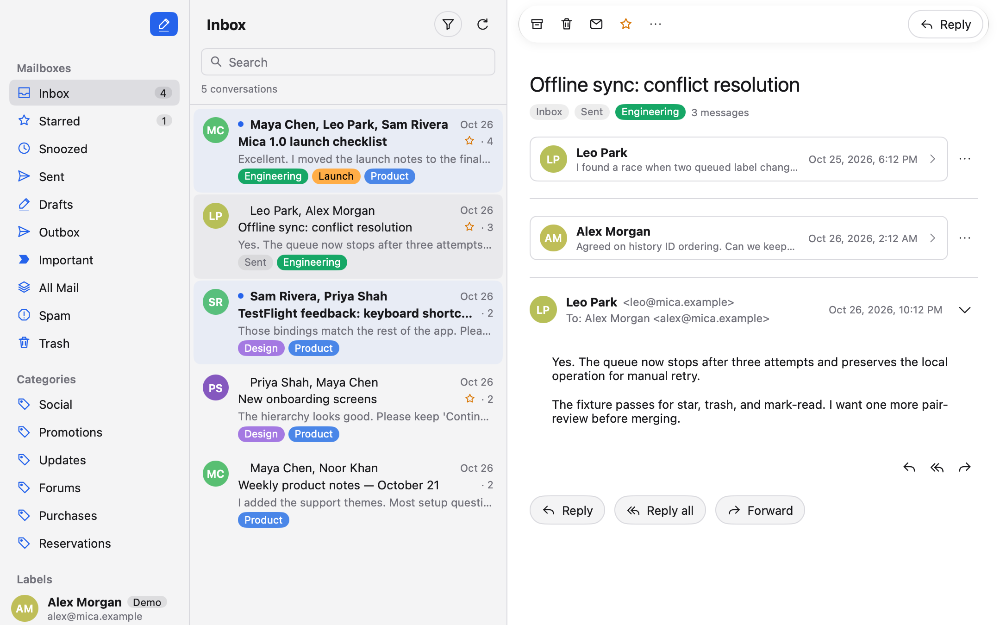

A calmer inbox
Move through labels and conversations in a quiet three-pane layout. Search, filter unread mail, and use familiar keyboard shortcuts.
Your mail, without the noise. A focused three-pane workspace for reading, organizing, and getting back to people.
Free download · Universal build for Apple Silicon and Intel

Made for the daily mail
Thoughtful tools for the whole journey from unread to answered, with your mailbox close at hand—even offline.
Move through labels and conversations in a quiet three-pane layout. Search, filter unread mail, and use familiar keyboard shortcuts.
Archive, star, trash, or mark as read without waiting. Changes synchronize in the background, and a quick undo is always nearby.
Drafts survive a lost connection. A persistent Outbox and scheduled sending keep your words and attachments intact until the right moment.
OAuth credentials stay in the macOS Keychain. Remote images are blocked by default, and local caches make previously loaded mail available offline.
A fresh start for your inbox